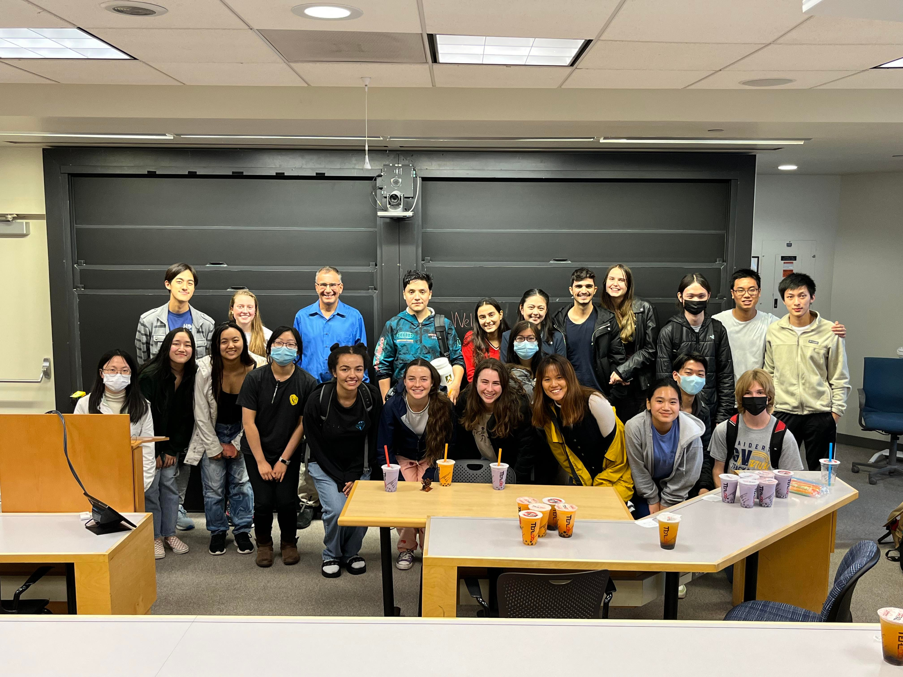
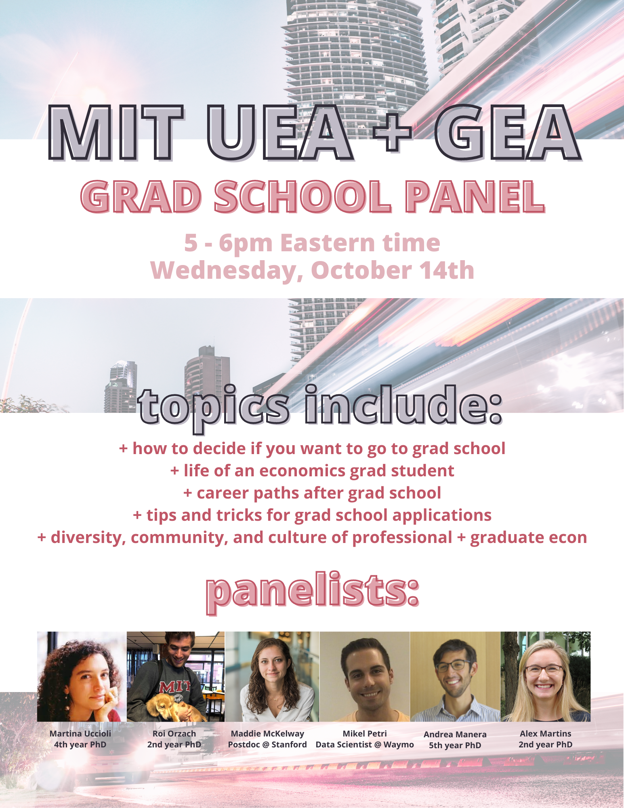

Notable Past Events
UEA Speaker Series Fall 2022
+
Jon Gruber (10/25/2022, 4-5pm) - The science of healthcare in the 21st century

+
Jing Li (11/29/2022, 4-5pm) - Auto industry collusion on diesel emission regulations
UEA Speaker Series Spring 2021
+
Anne McCants (3/9/2021, 4-5pm) - Polygamy, Commodification of Women, Underdevelopment
+
Vijay Vaitheeswaram (4/2/2021, 5-6pm) - Economic Journalism, The Economist
+
Asim Ijaz Khwaja (5/10/2021, 12-1pm)
+
Clare Balboni (5/19/2021, 12-1pm) - Environmental Economics
+
Farhan Zaidi (TBD)
COVID-19 Policy Hackathon 6/13/2020 - 6/14/2020
Teaming up with the
Stanford Economics Association, the COVID-19 Policy Hackathon was a
36-hour virtual hackathon dedicated to designing policy proposals that aim to solve today's most pressing economic challenges. Hackathon participants formed teams within one of four policy tracks:
public health,
trade and immigration,
firms and workers, and
financial policy. We garnered 1000+ applicants from 60 countries. 56% of applicants identified as non-male which is exciting given the large gender gaps in public administration and the field of professional economics!
International Symposium of Economics 10/5/2020 - 10/10/2020
The UEA (Undergraduate Economics Association) is excited to be a part of a
long-standing reputable conference in economics, the International Symposium of Economics (El Simposio Internacional de Economía)! Speakers included Claudio Ferraz (Bringing Evidence to Policy Making in Latin America) and Roberto Rigobon (Political Convulsion: The Role of Big Data). This event was a
huge opportunity to interact and mingle with students from our other partner universities, which include Pontificia Universidad Católica de Chile, Universidad de los Andes, and the Tecnológico de Monterrey!
UEA Speaker Series Fall 2020
The UEA welcomed faculty from MIT, UC San Diego, and Harvard to chat about their research and career paths.
Economics Graduate School Panel 10/14/2020, 5-6 pm
Come learn about what being an economics PhD student is like and whether or not it could for you! We have a wide array of panelists who can speak to career paths after graduate school, tips and tricks for applications and diversity, community and culture of economics.

How to Read a Research Paper 2/28/2020, 3-3:30pm
Our Academic Exploration officer Catherine Huang takes members through the process of reading economics research papers.